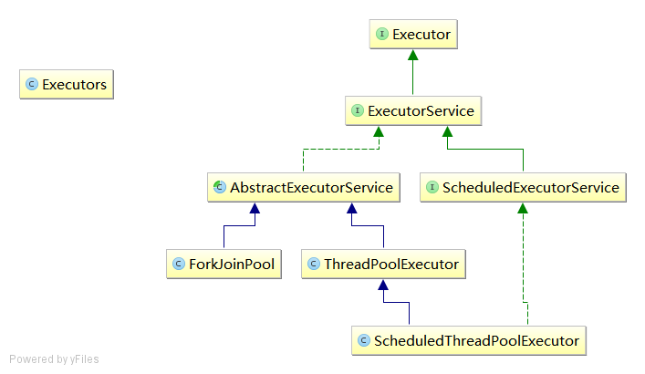

前言
Executor Framework（执行器框架）是自Java5引入，它将任务的创建和执行进行了分离，通过该框架，只需要实现Runnable接口的对象和使用Executor对象，然后将Runnable对象发给执行器。执行器负责运行这些任务的线程操作（创建、管理、结束等）
类图如下： 
Executor接口
Executor 该接口提供一种将 任务提交 和 任务如何运行的机制（如线程使用的细节、调度等）解耦的方法。
建议使用Executor而不是显示创建线程。
示例：
public class ExecutorTest {
public static void main(String[] args) throws InterruptedException {
/**
* 该接口并未有要求一定是异步执行
*/
Executor tempExecutor = new Executor(){
@Override
public void execute(Runnable command) {
//在当前线程中执行
command.run();
//新创建线程执行
new Thread(command).start();
}
};
tempExecutor.execute(new Runnable(){
@Override
public void run() {
System.out.println("1");
}
});
Thread.sleep(Integer.MAX_VALUE);
}
}
ExecutorService接口
ExecutorService 继承自Executor接口，描述了在后台异步执行任务的方法，这让它看起来很像线程池，而且它在concurrent的实现也的确是个线程池。它定义了两类方法：
-
关闭ExecutorService的方法，将导致其拒绝接受新任务。
- shutdown() 终止前允许执行以前提交的任务
- shutdownNuow() 阻止等待任务启动，并试图停止正在执行的任务。
-
提交Runnable/Callable 任务后返回Future来跟踪结果的方法。
- 提交单个任务的submit系列方法
- 提交批量任务的invoke系列方法
ScheduledExecutorService接口
ScheduledExecutorService 继承自ExecutorService ,定义了执行给定延迟后运行的任务和定期执行任务的方法
ThreadPoolExecutor类
ThreadPoolExecutor
内部结构如图：

对应的程序源码：
private final BlockingQueue<Runnable> workQueue;
private volatile int corePoolSize;
private volatile int maximumPoolSize;
public void execute(Runnable command) {
if (command == null)
throw new NullPointerException();
// 第一步：如果线程数< corePoolSize 就new一个线程运行该任务
int c = ctl.get();
if (workerCountOf(c) < corePoolSize) {
if (addWorker(command, true))
return;
c = ctl.get();
}
// 第二步：如果成功入队列，在进行二次检测
if (isRunning(c) && workQueue.offer(command)) {
int recheck = ctl.get();
if (! isRunning(recheck) && remove(command))
reject(command);
else if (workerCountOf(recheck) == 0)
addWorker(null, false);
}
// 第三步：如果不能入队，我们尝试new一个新的线程，如果失败了，就拒绝该任务
else if (!addWorker(command, false))
reject(command);
}
/**
* 可以看到addWoker的目的就是new 一个Thread然后运行它
*/
private boolean addWorker(Runnable firstTask, boolean core) {
retry:
for (;;) {
int c = ctl.get();
int rs = runStateOf(c);
// Check if queue empty only if necessary.
if (rs >= SHUTDOWN &&
! (rs == SHUTDOWN &&
firstTask == null &&
! workQueue.isEmpty()))
return false;
for (;;) {
int wc = workerCountOf(c);
if (wc >= CAPACITY ||
wc >= (core ? corePoolSize : maximumPoolSize))
return false;
if (compareAndIncrementWorkerCount(c))
break retry;
c = ctl.get(); // Re-read ctl
if (runStateOf(c) != rs)
continue retry;
// else CAS failed due to workerCount change; retry inner loop
}
}
Worker w = new Worker(firstTask);
Thread t = w.thread;
final ReentrantLock mainLock = this.mainLock;
mainLock.lock();
try {
int c = ctl.get();
int rs = runStateOf(c);
if (t == null ||
(rs >= SHUTDOWN &&
! (rs == SHUTDOWN &&
firstTask == null))) {
decrementWorkerCount();
tryTerminate();
return false;
}
workers.add(w);
int s = workers.size();
if (s > largestPoolSize)
largestPoolSize = s;
} finally {
mainLock.unlock();
}
t.start();
if (runStateOf(ctl.get()) == STOP && ! t.isInterrupted())
t.interrupt();
return true;
}
从API文档可以看到，BlockingQueue是用于传输和保持提交的任务。 它有三种排队策略：
-
直接提交：默认选项是SynchronousQueue，由于它的特性，它将任务直接交给线程而不保持它们。 -
无界队列：默认选项是LinkedBlockingQueue，创建的线程数不会超过corePoolSize（maximumPoolSize也就无效了），将导致所有corePoolSize线程都忙时新任务会在队列中等待。 -
有界队列：默认选项是ArrayBlockingQueue，当使用有限的maximumPoolSizes时，有助于防止资源耗尽。
ForkJoinPool类
ForkJoinPool
ScheduledThreadPoolExecutor类
ScheduleThreadPoolExecutor
Executors类
Executors 一个工具类，实现了用以创建并返回 ExecutorService、SecheduledExecutorService、ThreadFactory、Callale的方法。
它内部其实是通过调用上面的实现类：ScheduledThreadPool、ThreadPoolExecutor、ForkJoinPool来实现的。
源码：
/**
* 创建一个可重用的固定大小的线程池，
* 当新来的任务没有线程可用时就放入队列等待，
* 当有的线程执行时发生异常挂掉了，会有新的线程补上，保证线程的个数
*/
public static ExecutorService newFixedThreadPool(int nThreads) {
// 这里内部队列使用的是LinkedBlockingQueue，当线程被沾满后用来存放等待执行的任务
// workQueue.offer(command)时，如果队列未满则会入队成功（而它是无限长度的队列），
return new ThreadPoolExecutor(nThreads, nThreads,
0L, TimeUnit.MILLISECONDS,
new LinkedBlockingQueue<Runnable>());
}
/**
* 创建一个不限制线程个数（需要时就创建）的线程池，
* 它会重用池中空闲的线程，如果没有就创建新的，
* 线程的有效空闲时间为60秒，之后会被回收
*/
public static ExecutorService newCachedThreadPool() {
// 这里内部队列使用的是SynchronousQueue，
// workQueue.offer(command)时，如果线程池中有空闲的就会操作成功然后由以创建过的线程执行，
// 如果失败就创建新的线程执行
return new ThreadPoolExecutor(0, Integer.MAX_VALUE,
60L, TimeUnit.SECONDS,
new SynchronousQueue<Runnable>());
}
CompletionService
CompletionService：是将提交异步任务和使用已完成任务结果的操作分离开来的
示例：
public class CompletionServiceTest {
public static void main(String[] args) {
ExecutorService pool = Executors.newCachedThreadPool();
CompletionService<Integer> cs = new ExecutorCompletionService<>(pool);
for (int i = 0; i < 5; i++) {
cs.submit(new CallableTask1("task" + i, i));//提交任务
}
for (int i = 0; i < 5; i++) {
System.out.println("trying to take from Completion service");
try {
Future<Integer> future = cs.take();//获取结果，可以把cs传给其他对象来进行任务结果的处理
Integer result = future.get();
System.out.println("result:"+result);
} catch (InterruptedException|ExecutionException e) {
e.printStackTrace();
}
}
pool.shutdown();
}
}
class CallableTask1 implements Callable<Integer> {
private String taskName;
private int temp;
public CallableTask1(String taskName, int temp) {
super();
this.taskName = taskName;
this.temp = temp;
}
@Override
public Integer call() throws Exception {
System.out.println(" Task " + taskName + " Started -----");
try {
Thread.sleep(200);
} catch (InterruptedException e) {
System.out.println(" Task " + taskName + " Interrupted !! ");
e.printStackTrace();
}
System.out.println(" Task " + taskName + " Completed");
return temp;
}
}
CompletionService和ExcutorService的区别
stackoverflow有人这样解释它俩的区别：
-
ExecutorService= incoming queue + worker threads -
CompletionService= incoming queue + worker threads + output queue
看CompletionService源码和上边的例子可以发现，它内部使用了ExecutorService
源码：
public class ExecutorCompletionService<V> implements CompletionService<V> {
private final Executor executor;
private final AbstractExecutorService aes;
// 存放任务执行完的结果
private final BlockingQueue<Future<V>> completionQueue;
// 为支持入队操作对FutureTask进行了扩展
private class QueueingFuture extends FutureTask<Void> {
QueueingFuture(RunnableFuture<V> task) {
super(task, null);
this.task = task;
}
// 可以看到任务执行完后有个入队操作
protected void done() { completionQueue.add(task); }
private final Future<V> task;
}
public Future<V> submit(Callable<V> task) {
if (task == null) throw new NullPointerException();
RunnableFuture<V> f = newTaskFor(task);
executor.execute(new QueueingFuture(f));
return f;
}
public Future<V> submit(Runnable task, V result) {
if (task == null) throw new NullPointerException();
RunnableFuture<V> f = newTaskFor(task, result);
executor.execute(new QueueingFuture(f));
return f;
}
// 可以看到结果就是从队列里阻塞的取数据
public Future<V> take() throws InterruptedException {
return completionQueue.take();
}
}
合理配置线程池大小
-
CPU密集型线程尽可能小，例如N+1 个（N为核数） -
IO密集型线程尽可能多，例如2*N 个 （N为核数），因为任务大多在等待IO
Java中获得CPU个数的代码为：Runtime.getRuntime().avabilableProcessors()
日期：2014-06-17、2014-06-18、2014-06-25
参考资料：聊聊并发（三）Java线程池的分析和使用、When should I use a CompletionService over an ExecutorService?